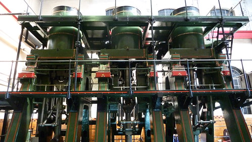
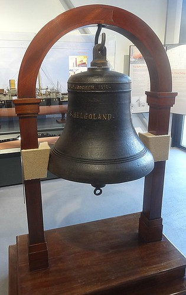
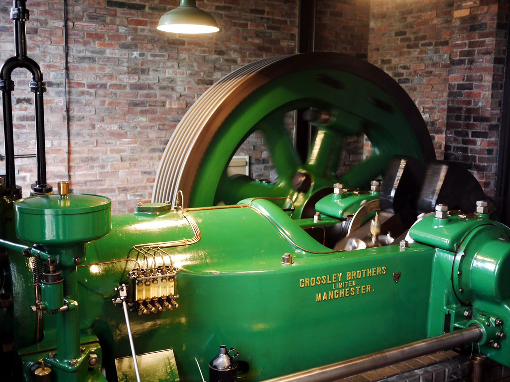

Welcome to the exhibits page of the website. This is where you can see
a non-AR picture of exhibits in the museum and see some information
about them.

River Don Engine: This is a steam engine that was built in 1905  SMS Helgoland Bell: This bell came from the Dreadnaught battleship  Crossley Gas Engine: This was made by Crossley Brothers Ltd in
in sheffield, and is currently the most powerful european steam
engine that still works. It has 12,000 horsepower and was made
to drive Charles Cammell's armour plate rolling mill.
named SMS Helgoland, which was part of the German Imperial
Navy, and launched on the 25th September 1909. The battleship
participated in the Battle of Jutland in 1916 during WW1 and was
given to Britain when WW1 ended, and was used for scrap in the 1920s.
The bell was removed from the ship and put on display in the Directors
Corridor at Albion Works.
Manchester in 1915. It drove a small rod and bar rolling mill on
Penistone Road belonging to George Clark and remained in use in
Sheffield until 1970. Gas engines were developed in the 1860s to
make a better way to provide power and drive machines. Crossley
Brothers became one of the best-known builders of gas engines in
the UK. This engine represents the largest single cylinder engine
manufactured by the Crossleys, and is a rare survivor of its type.